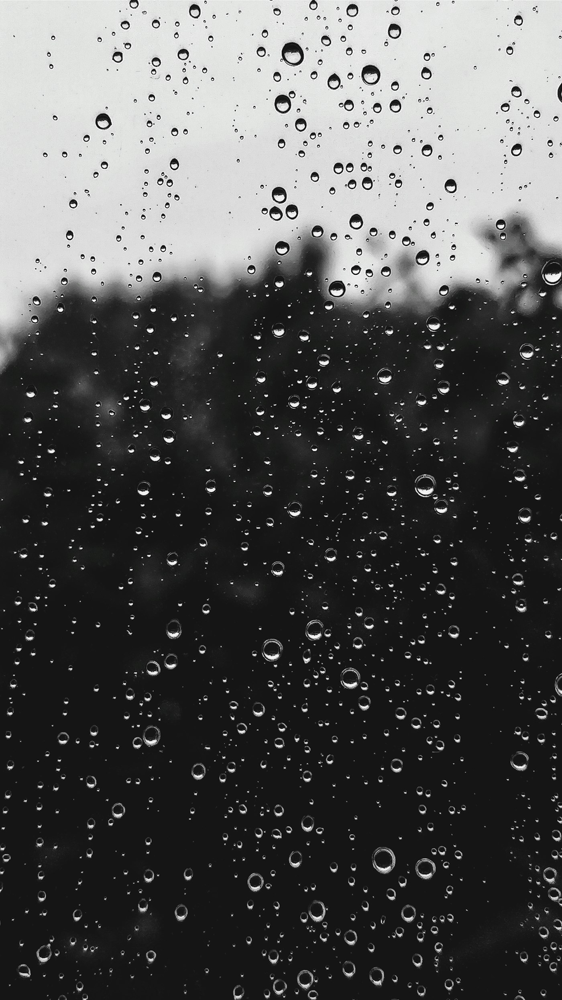

Viết bên ly đen đá
Cà phê đen đá không phải thức uống. Ở Sài Gòn, nó là chỗ ngồi, là khoảng lặng giữa hai việc, là lúc chữ bắt đầu chịu ra.
Viết chậm về những thứ đáng nhớ
Một góc viết từ Sài Gòn. Ít bài, đọc chậm, không vội xuất bản cho đủ lịch.
Bài nổi bật
Cà phê đen đá không phải thức uống. Ở Sài Gòn, nó là chỗ ngồi, là khoảng lặng giữa hai việc, là lúc chữ bắt đầu chịu ra.
Một cuốn sách hay không cần đọc nhanh. Nó cần chỗ trống giữa các câu, và vài buổi chiều để quay lại trang đã gấp.
Trong hẻm, thời gian đi chậm hơn ngoài đường. Người ta bán chè, sửa xe, phơi áo. Tôi hay đứng đó một lúc trước khi đi tiếp.
Tôi không tin ghi chú trên điện thoại. Chữ viết tay giữ được nhịp thở của buổi đó, kể cả khi nội dung chẳng còn quan trọng.
Một trang đẹp không phải vì nhồi chữ. Nó đẹp vì biết để yên những chỗ trống, để mắt có chỗ nghỉ.
Có những đoạn văn tôi đọc ba lần. Không phải vì khó. Vì muốn ở lại thêm một chút, như đứng trước cửa sổ mưa.

Mưa tạnh, phố bốc hơi. Xe máy len qua vũng nước. Mùi đất và xăng hòa vào nhau — thứ mùi chỉ có ở thành phố này.
Nửa đêm, máy lạnh kêu nhỏ. Tôi mở sổ. Những câu ban ngày không dám viết thì ban đêm tự đến.
Serif không chỉ là chân chữ. Nó là cách nói: hãy đọc chậm, như người ta từng đọc trên giấy.
Tôi viết từ Sài Gòn. Nguyễn Trần Kha là nơi giữ những bài không vội — ghi chép, đọc, phố, và vài suy nghĩ về chữ. Không newsletter, không quảng cáo. Chỉ trang này, khi có gì đáng nhớ.
Chữ tiêu đề Fraunces, chữ bài Source Sans 3. Nền giấy ấm, accent xanh rêu. Trang được xếp để đọc, không để lướt.